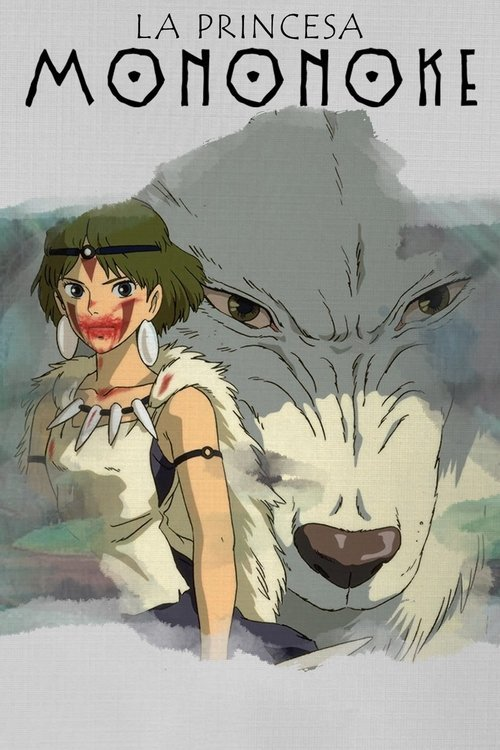

La princesa Mononoke (1997)
Sinopsis Rápida
En un Japón feudal mágico, una princesa guerrera y un príncipe maldito se enfrentan en una batalla épica por la supervivencia del bosque y la humanidad misma.
Sinopsis Detallada
La princesa Mononoke, criada por lobos, se enfrenta al príncipe Ashitaka, quien busca la paz entre la naturaleza y los humanos. El conflicto surge por la explotación de los recursos naturales y la deforestación. La película explora temas complejos de ecología, ambición y la dualidad entre la naturaleza y la civilización, ofreciendo una crítica social profundamente relevante incluso hoy en día. La dirección de Hayao Miyazaki brilla con un estilo visual inigualable, creando un mundo rico y detallado.
¿Por qué tenés que verla?
- Una obra maestra de la animación con una historia épica y conmovedora.
- La impresionante dirección de Hayao Miyazaki, con su estilo visual único y su impactante banda sonora.
- Un clásico del cine de animación que ha influenciado a generaciones de cineastas y artistas.
- Explora temas relevantes sobre la relación entre la humanidad y el medio ambiente.
Idea Extra
Análisis del simbolismo en La princesa Mononoke: La representación de la naturaleza, los dioses y la dualidad humana.
{{CONTENIDO_RELACIONADO}}